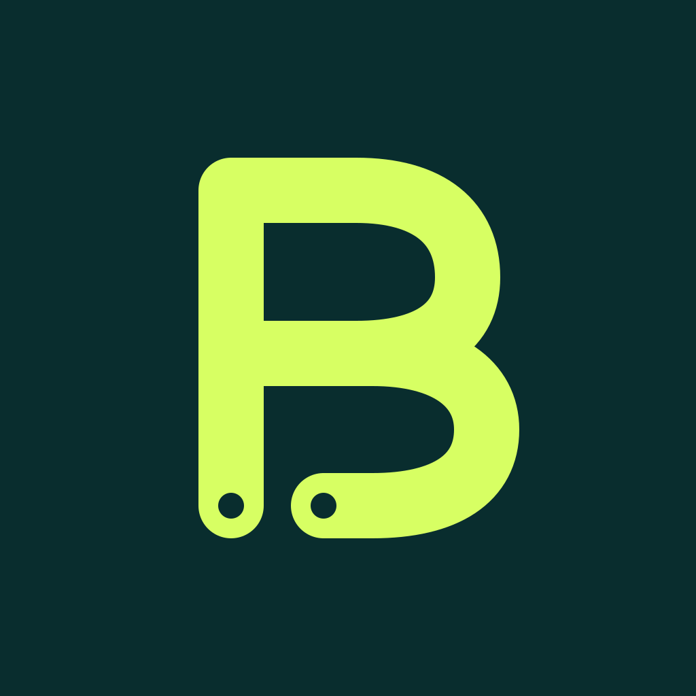

اتصال برقرار نیست
بِسراه برای زمانبندی، مسیر و قیمتها به اینترنت نیاز دارد. همین که اتصال برگردد، صفحه خودش بهروز میشود.
تلاش دوبارههیچ عددی در حالت بدون اتصال حدس زده نمیشود.

بِسراه برای زمانبندی، مسیر و قیمتها به اینترنت نیاز دارد. همین که اتصال برگردد، صفحه خودش بهروز میشود.
تلاش دوبارههیچ عددی در حالت بدون اتصال حدس زده نمیشود.